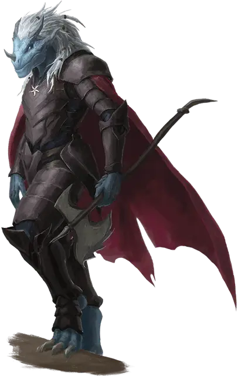

Драконорождённый Тиамат
Dragonborn of Tiamat
Средний Гуманоид, хаотично-злой

Класс Доспеха 18 (латы)
Хиты 85 (10к8 + 40)
Скорость 30 футов
| мод | спас | ||
|---|---|---|---|
| СИЛ | 20 | +5 | +8 |
| ЛОВ | 11 | +0 | +0 |
| ТЕЛ | 18 | +4 | +7 |
| мод | спас | ||
|---|---|---|---|
| ИНТ | 10 | +0 | +0 |
| МДР | 12 | +1 | +4 |
| ХАР | 16 | +3 | +6 |
Навыки Атлетика +8, Восприятие +4, Запугивание +6
Иммунитет к состояниям испуг
Чувства пассивное Восприятие 14
Языки Общий, Драконий
Опасность 7 (2900 опыта)
Бонус мастерства +3
Особенности
Легендарное сопротивление (1/день). Если драконорождённый провалит спасбросок, он может вместо этого сделать спасбросок успешным.
Действия
Мультиатака. Драконорожденный совершает две атаки Секирой.
Секира. . Рукопашная атака оружием: +8 к попаданию, досягаемость 5 фт., одна цель. Попадание: 11 (1к12+5) рубящего урона плюс 13 (3к8) урона некротической энергией.
Некротическое дыхание (перезарядка 6). Драконорожденный выдыхает тёмное пламя в 30-футовом конусе. Все существа в этой области должны совершить спасбросок Мудрости Сл 15. При провале существо получает 36 (8к8) урона некротической энергией и становится испуганным драконорожденным в течение 1 минуты. При успехе существо получает половину урона и не пугается. Испуганное существо может повторять спасбросок в конце каждого своего хода, оканчивая эффект на себя в случае успеха.
Описание
Чемпионов королевы драконов часто называют Когтями Тиамат. Они неустанно трудятся, чтобы освободить свою хозяйку из заточения в Авернусе, и Тиамат наделяет этих пешек огромной силой и разрушительным оружием дыхания. Чемпионы Тиамат иногда ассоциируются с Культом Дракона.
Драконорождённый чемпионы. Связь между драконорожденными и их драконьими предками проявляется по-разному. Некоторые драконорожденные отождествляют себя с определенным видом драконов и пытаются подражать поступкам и поведению таких драконов. Другие считают свое драконье наследие — цветное, металлическое или самоцветное — чем-то вроде большой расширенной семьи. Но для чемпионов-драконорожденных эта связь является как духовной, так и биологической, и они посвящают себя своему божественному предку. Драконорожденные чемпионы продвигают дело своего бога-дракона среди драконьих существ и других народов.